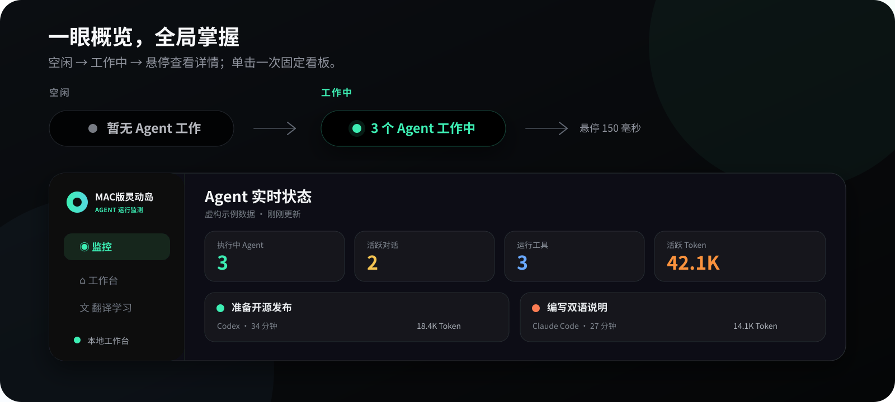

当前工作状态
区分工具已安装、应用正运行与 Agent 正在工作，不把软件存在误报为任务执行。
一行紧凑灵动岛显示当前状态；悬浮后查看工具、对话、工作时长和来源可验证的 Token 用量。
A compact notch panel for live local agents, conversations, elapsed time, and source-reported token usage.



区分工具已安装、应用正运行与 Agent 正在工作，不把软件存在误报为任务执行。
只展示本机数据源实际提供的用量，保留输入、缓存、输出、推理与覆盖范围。
常用网站、备忘录、中英文翻译、一句话定义和可搜索学习本整合在同一面板。
无需 Agent 日志、目录授权、账号或网络，也能体验持续明示紫色标记的虚构监测看板。